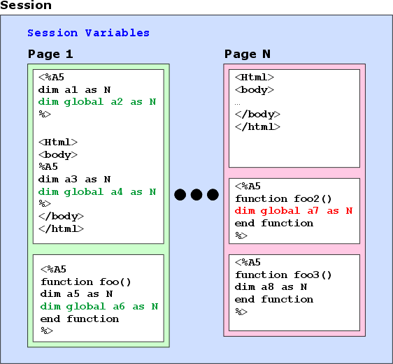
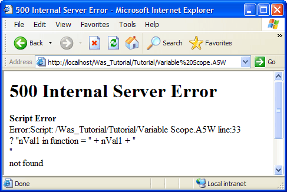
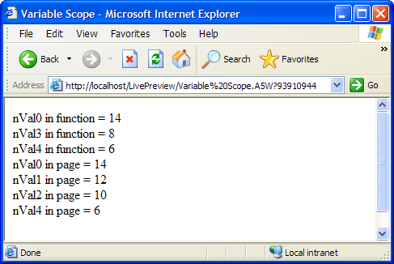

Understanding Variable Scope
You may DIM a variable in two locations in an A5W page.
In a code block ( <%a5 ... %> ) inside or outside of the <BODY> ... </BODY> tags
In a function
In the illustration below a session may consist of many pages. The variables that you create with the DIM variable_name syntax are only visible inside within a single page. They are even more limited in scope . Looking at Page 1 below, a1 and a3 are available to be read or set within their bounding white box. They are not visible inside function foo(). Likewise, a5 is visible in function foo(), but not visible anywhere else in page 1. The scope of a1, a3, and a5 is local .
In contrast, the variables that you create with the DIM GLOBAL variable_name syntax are visible anywhere within the page. Thus, a2, a4, and a6 are available to be read or set anywhere within their bounding green box. Variable a7 is available anywhere within its bound red box. The scope of these variables is global .
To share variables between pages, you must use session variables. There is more about session variables in Understanding and Using Session Variables.

Create a new A5W page with the following content.
<html> <head> <meta name="generator" content="Alpha Five HTML Editor"> <title>Variable Scope</title> </head> <body> <%a5 dim global nVal0 as N = 14 dim nVal1 as N = 12 dim nVal2 as N nVal2 = 10 set_var() ? "nVal0 in page = " + nVal0 + "<br>" ? "nVal1 in page = " + nVal1 + "<br>" ? "nVal2 in page = " + nVal2 + "<br>" ? "nVal3 in page = " + nVal3 + "<br>" ? "nVal4 in page = " + nVal4 + "<br>" %> <%a5 function set_var() dim nVal3 as N = 8 dim global nVal4 as N = 6 ? "nVal0 in function = " + nVal0 + "<br>" ? "nVal1 in function = " + nVal1 + "<br>" ? "nVal2 in function = " + nVal2 + "<br>" ? "nVal3 in function = " + nVal3 + "<br>" ? "nVal4 in function = " + nVal4 + "<br>" end function %> </body> </html> |
Select File > Save As .
Enter "Variable Scope" in the File name field and click Save .
Click
 to close the HTML Editor .
to close the HTML Editor .Display the A5W Pages page of the Web Projects Control Panel .
Right click the "Variable Scope" entry and select Publish (Local Webroot) and open . Your new page will appear in your Internet browser. The results should look like this.

If you look at the page, you will see that set_var() function runs before the page prints its local variables. When set_var() attempts to print nVal0 to nVal4 , it turns out that nVal1 is not in scope . nVal1 is local to the page and unknown to set_var(). An error results. Place an Xbasic comment at the beginning of this line and try publishing the page again.
'? "nVal1 in function = " + nVal1 + "<br>" |
This time the problem with scope is that nVal2 is also local to the page and unknown to set_var(). An error results. Place an Xbasic comment at the beginning of this line and try publishing the page again.
'? "nVal2 in function = " + nVal2 + "<br>" |
This time the problem with scope is that nVal3 is local to the function set_var() and unknown to the page. An error results. Place an Xbasic comment at the beginning of this line and try publishing the page again.
'? "nVal3 in page = " + nVal3 + "<br>" |
Finally, the page runs without error. Both the set_var() function and the page are able to print their local variables and the global variables.

See Also